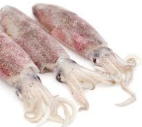

Algarve style squid
Algarve-style squid, a simple classic with a taste of the sea and tradition.
Saute the squid in a skillet, drizzle with white wine, serve with potatoes, and top with chopped parsley.
A practical and delicious suggestion.
Ingredients
- medium (or small) squid -- 1 kg 
- Salt -- 2 teaspoons
- Pingo Doce olive oil -- 2 tablespoons
- garlic -- 3 cloves
- bay leaf -- 1 leaf
- Pingo Doce white wine -- 100 ml
- potato -- 600 g
- pepper -- as much as it takes
- fresh parsley -- 2 tablespoons
Instructions
Follow these steps to make the dish. The method is intentionally simple — timing and attention to the garlic are the keys.
- Wash the squid well in cold water, without opening them, season with half the salt.
- Place a skillet over heat with the olive oil, crushed garlic, and bay leaf. Cook for 1 minute, taking care not to burn the garlic.
- Add the squid and fry over low heat until golden brown, then add the white wine and a little water to finish cooking.
- Peel and slice the potatoes into thick slices, place them in a pot, cover with water, and season with the remaining salt and pepper. Cook for about 15 minutes.
- Serve the squid with the potatoes and sprinkle with chopped parsley.
Variation
You can add cooked shrimp or sliced cherry tomatoes for extra texture and flavor. For a vegan option, skip the cheese.
Nutrition
| Component | Per Serving | % of RDI* |
|---|---|---|
| Energy | 362 Kcal | 18% |
| Fat | 9.7 g | 14% |
| Saturated Fat | 2.0 g | 10% |
*Recommended Daily Intake